Tarjetas de expansión¶
Se utilizan para agregar una nueva función o para mejorar una existente. Para ensamblar la tarjeta de expansión en la ranura correspondiente, primero tendremos que quitar las ranura trasera del panel trasero de la carcasa, este es el sitio por donde se mostrara al exterior.

Finalmente la atornillaremos al chasis, siempre que sea posible, se recomienda dejar una ranura vacía entre las tarjetas para permitir una mejor circulación de aire.
Los tipos de tarjetas de expansión mas comunes son:
Tarjetas gráficas¶


GPU : («graphics processing unit», significa «unidad de procesamiento gráfico») es un procesador (como la CPU) dedicado al procesamiento de gráficos; su razón de ser es aligerar la carga de trabajo del procesador central y, por ello, está optimizada para el cálculo en coma flotante, predominante en las funciones 3D. Tres de las más importantes características son la frecuencia de reloj del núcleo, que puede oscilar entre 825 MHz en las tarjetas de gama baja, y 2000 MHz (e incluso más) en las de gama alta, el número de procesadores shaders (estos shaders unificados reciben el nombre de núcleos CUDA en el caso de NVIDIA y procesadores stream en el caso de AMD) y el número de pipelines (vertex y fragment shaders), encargadas de traducir una imagen 3D compuesta por vértices y líneas en una imagen 2D compuesta por píxeles.
RAMDAC: Conversor analógico-digital (DAC) de la memoria RAM, empleado en las tarjetas gráficas para transformar la señal digital con que trabaja el ordenador en una salida analógica que pueda entender el monitor.
Ray tracing es una tecnología desarrollada por NVIDIA que se encarga de mejorar las iluminaciones, sombras y reflejos de los videojuegos. En español, ray tracing significa “trazado de rayos” y hace referencia a un cálculo mucho más preciso de las iluminaciones del juego que impactan en los reflejos y sombras.
GDDR. Las memorias GDDR (Graphics Double Data Rate) son una variación de las memorias RAM DDR, a las que se les ha aumentado la velocidad respecto a las memorias DDR, debido a que las tarjetas gráficas necesitan procesar mucha información, y leer y escribir continuamente a una velocidad muy alta.
GDDR5: Puede alcanzar velocidades de transferencias de hasta 8Gbps, con anchos de 28GB/s por chip. Se fabrica en capacidades de 512MB hasta los 8GB. su ancho de bus es de 32-bit.
GDDR5X: es una versión mejorada de la anterior, con un mejor rendimiento. Es dos veces más rápida que una GDDR5 normal, y puede alcanzar velocidades desde los 10 a los 16Gbps. También consume menos energía debido a la reducción de voltaje (1.35v frente a 1.5v) citada anteriormente. Y está disponible en capacidades de 4 a 16GB.
GDDR6: también funciona a 1.35v, pero consigue velocidades de 16-18Gbps, consiguiendo un ancho de banda de hasta 72GB/s. Se pueden fabricar con capacidades de hasta 32GB debido a su mayor densidad.
GDDR6X: es una actualización de la anterior, con una ganancia de velocidad y un ancho de banda muy alto (casi como una HBM2). Sigue funcionando a 1.35v, aunque se ha ganado en eficiencia. Esta memoria puede alcanzar hasta los 21Gbps de velocidad y anchos de banda de hasta 1 TB/s.
Velocidad de Refresco. Rapidez con que el contenido de la memoria de vídeo se envía al monitor, es el número de veces por segundo que se dibuja la pantalla. La resolución está relacionada con la velocidad de refresco: a mayor resolución, menor velocidad de refresco. Se mide en Hz. Velocidades de refresco habituales son 75Hz, 80Hz o 85HZ. El mínimo es 60 Hz. Para jugar, podemos encontrar velocidades de refresco de 144 a 240Hz
Profundidad de color: Número de bits usados para el color de cada píxel. Determina el número máximo de colores que puede mostrar una imagen de forma simultánea
Bitts |
Nº Colores |
Nombre |
1 |
2 |
Monocromo |
2 |
4 |
CGA |
4 |
16 |
EGA |
8 |
256 |
VGA |
16 |
65536 |
XGA, color de alta densidad |
24 |
16777216 |
SVGA, color verdadero |
32 |
16777216 + Transparencia |
Resolución: Número de píxeles que es capaz de representar una tarjeta de vídeo en la pantalla tanto en horizontal como en vertical, ejemplo: Resolución de 800x600.


OpenGL: Es una especificación estándar que define una API multilenguaje y multiplataforma para escribir aplicaciones que produzcan gráficos 2D y 3D. Es el principal competidor de Direct3D de Microsoft.
DirectX: Es una colección de APIs creadas para facilitar tareas relacionadas con la programación de juegos en la plataforma Microsoft Windows.
SLI y CrossFire: Tecnología de Intel/Nvidia y AMD/ATI respectivamente, que permite conectar dos tarjetas gráficas en un mismo ordenador con el objetivo de aumentar el rendimiento gráfico.
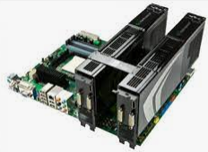VGA: Estándar analógico diseñado para monitores CRT: sufre de ruido y distorsión por la conversión de digital a analógico y el error de muestreo al evaluar los píxeles a enviar al monitor. Este tipo de interfaz se usa para enviar 3 señales analógicas a la pantalla. Dichas señales corresponden a los componentes rojos, azules y verdes de la imagen.
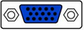DVI: Sustituto del anterior que hace obtener la máxima calidad de visualización en las pantallas digitales como los LCD o proyectores.
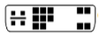S-Video: Incluido para dar soporte a televisores, reproductores de DVD, vídeos y videoconsolas.
Video Compuesto: Analógico de muy baja resolución mediante conector RCA.


HDMI: Tecnología digital que pretende sustituir todas las anteriores. Es una norma de audio y video digital de alta definición. Permite el uso de vídeo estándar, mejorado o de alta definición, así como audio digital multicanal en un único cable puede llegar a 4,9 Gbit/s.

DisplayPort es una alternativa al HDMI que fue desarrollado entre 2006 y 2007. Puedes diferenciarlo porque uno de los lados es diferente al otro. No es compatible con tantos dispositivos como el HDMI, pero tiene unas cualidades mayores. Podríamos decir que es una especie de evolución, el estándar heredero que sin ser tan soportado, aunque tiene un arma secreta que es la compatibilidad con puertos USB de tipo C.
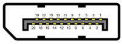 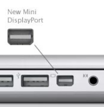
{kind=link}
{kind=link}
Tarjetas de sonido¶

Color |
Función |
Rosa |
Entrada analógica para micrófono. |
Azul |
Entrada analógica «Line-In» |
Verde |
Salida analógica para la señal estéreo principal (altavoces frontales). |
Negro |
Salida analógica para altavoces traseros. |
Game Port |
Joystick, dos puertos MIDI IN y MIDI OUT |
Naranja |
Salida Digital SPDIF (que algunas veces es utilizado como salida analógica para altavoces centrales). |
Entrada / Salida digital SPDIF óptica
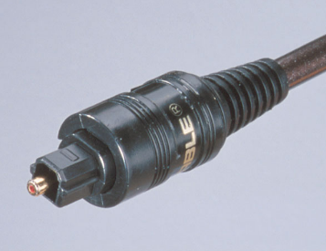Entrada/Salida digital SPDIF coaxial

Conversores DAC y ADC: Conversor digital-analógico y analógico-digital respectivamente
Formato MIDI: MIDI (Musical Instrument Digital Interface). Permite la comunicación entre instrumentos musicales y tarjetas de sonido.
Formato MP3: MP3 (MPEG-1 Audio Layer 3), Estándar de compresión de archivos de audio, Como el oído humano no es capaz de percibir todos los sonidos que se emiten estos no se incluyen, consiguiendo un mayor grado de compresión. Una canción de 3min. En formato CD-DA ocupa 33MB. En formato mp3 sólo 3MB
Formato WMA: WMA (Windows Media Audio), WMA (Windows Media Audio). Calidad similar a mp3 pero con mejores tasas de compresión
Formato OGG ORBIS. Formato libre usado en codecs. Nivel de calidad superior a MP3 con una tasa de compresión similar.
Formato MP3 PRO. Formato libre usado en codecs. Nivel de calidad superior a MP3 con una tasa de compresión similar.
Formato MP4: MP4 es un formato de audio y/o vídeo, con mayor compresión y potencia. Almacenan diferentes tipos de datos, desde música a imágenes, y la idea es intentar ser un formato único, en el que se podría incluso almacenar datos de diferentes tipos en un mismo archivo.
Sonido envolvente : Los sistemas más usados son Dolby Porlogic Surround, Dolby Digital AC-3 y DTS.
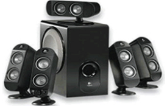
{kind=link}
Tarjeta de red (PCI, PCMIA, INALÁMBRICAS)¶
 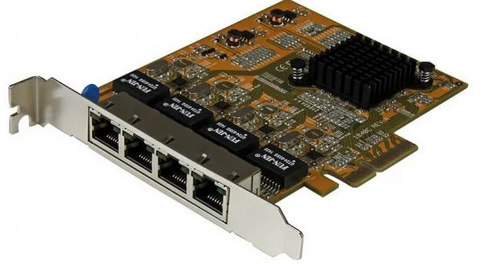
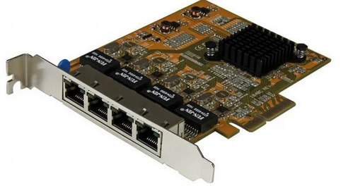
{kind=link}
 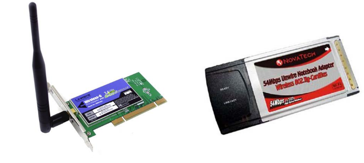
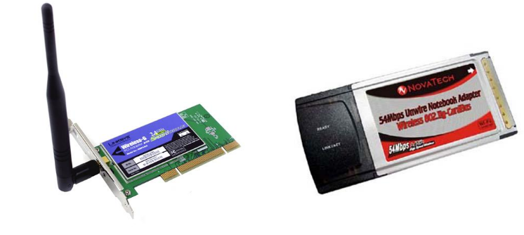
{kind=link}
Tarjetas sintonizadores de televisión.¶
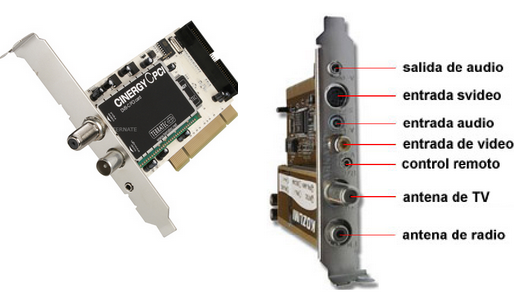Adaptadores de interfaz¶
Por ejemplo: Firewire, IDE, USB, SATA, eSATA, SCSI:


 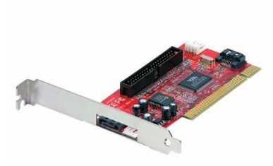
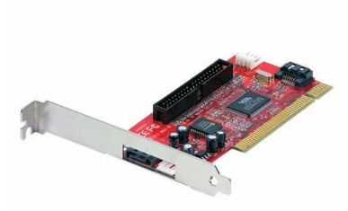
{kind=link}
Controladoras RAID¶